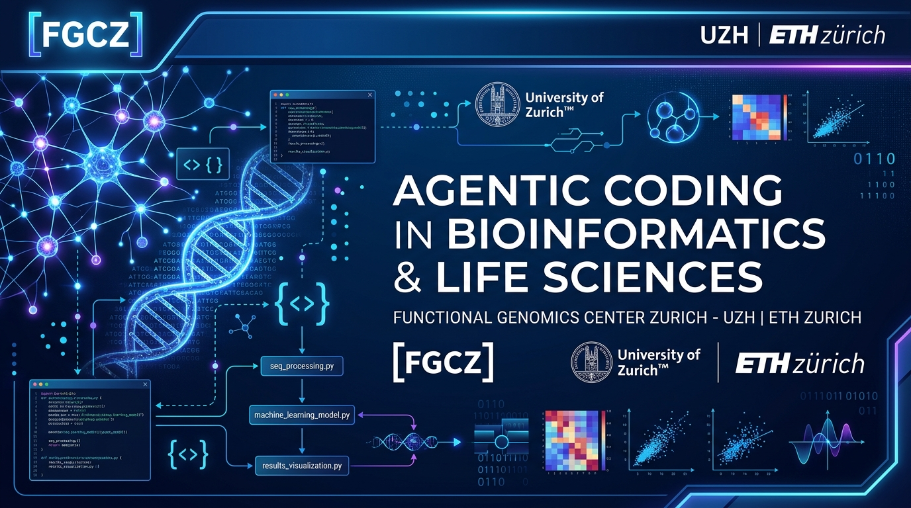

Teaching Agentic Coding in Higher Education
Navigating the Landscape: Antigravity vs. Claude Code, Token Economics & Free Student Setups
The Paradigm Shift: From Copilot to Autonomous Agent
Chat Assistant
Copy/paste code snippets into a browser window. Disconnected from your file system, compiler, or tests.
Inline Copilot
Autocomplete suggestions as you type. Reactive single-line / small block predictions based on surrounding open tabs.
Agentic Coding
Autonomous execution loops: Reads files, executes commands, fixes lint errors, runs tests, inspects outputs, and iterates.
Free Tier Reality: Antigravity vs. Claude Code
Google Antigravity
Free Individual Tier ($0)
- ✓ No credit card needed: Accessible with any standard Google account.
- ✓ Full Agent Capabilities: Includes autonomous file editing, terminal execution, subagents, and diffs.
- ✓ Unlimited Tab Completions: Code completions and inline prompt edits do not consume agent quota.
- ⚠ Weekly Agent Budget: Autonomous multi-turn loops are capped weekly for free users.
Claude Code (Anthropic)
No Free Tier Available
- ✗ No Free CLI Access: Web free tier does NOT grant Claude Code terminal access.
- ✗ Mandatory Subscription: Requires Claude Pro ($20/mo) or prepaid Anthropic API credits.
- • Top-tier reasoning: Exceptional code architecture with Sonnet/Opus models.
- ⚠ Shared Quota: Coding in terminal shares your 5-hour web chat quota.
Context Windows & Token Economics
Context Window Capacity
What 1M–2M Tokens Unlocks for You:
You can feed an entire multi-package repository, full API documentation, RNA-seq pipeline configs, and scientific reference papers in a single turn without loss of recall.
What 200k Tokens Excels At:
Ample for focused module refactors, microservices, and deep reasoning tasks. Claude's prompt caching discounts cached tokens by 90%, making repeated edits very cost-efficient.
Paid Subscriptions vs. Free Tiers: Refresh Cycles
| Plan Tier | Refresh Cycle | Agent Loops Allowance | Model Access | Failure Mode |
|---|---|---|---|---|
| Free Individual (Students) |
Weekly Reset | Standard quota for simple lab tasks | Flash / lightweight models prioritized | Hard stop on agent runs until next week |
| Antigravity Pro / Ultra (Instructor Tier) |
5-Hour Rolling + Weekly Cap | 5× to 20× higher autonomous loops | Priority Pro & deep reasoning models | Fall back to pay-as-you-go AI credits |
| Claude Pro ($20/mo) (Instructor Tier) |
5-Hour Rolling Window | ~40–80 messages per 5h window | Claude 3.5 Sonnet / 3.7 / Opus | Pause until next 5h window begins |
If an instructor hits a quota limit in the morning, they are back online by the afternoon lab. If a student drains their weekly free quota on Monday, they cannot complete Friday's assignment.
Never design homework where students ask the AI to "build everything from zero." Frame exercises around targeted modular tasks to safeguard their weekly quota.
Free Tier Survival Guide: 4 Golden Rules
Strict Context Hygiene
Always add a proper .gitignore! Never let the agent crawl through node_modules/, .venv/, raw biological sequencing data (.fastq, .bam), or build caches.
Scope Prompts to Specific Files
Avoid broad prompts like "Refactor my whole project". Instead, use targeted file links: "In calc_stats.py, optimize the sliding window function."
Default to Flash Models
Use fast, lightweight models (e.g. Gemini Flash) for initial prototyping, scaffolding, and unit tests. Reserve reasoning/Pro models only for complex algorithm debugging.
Leverage Free Tab Completions
In Antigravity, ghost-text inline tab completions and basic code commands are free and unlimited. Use them for standard coding flow before triggering autonomous agent runs.
Plan B: Free Google AI Studio API Keys
If students exhaust their weekly Antigravity agent quota:
Every student can obtain their own personal, completely free API key directly from Google AI Studio (aistudio.google.com) using their standard Google account—no credit card required.
Students can configure this free key into CLI & VS Code tools: Aider, Continue.dev, or Roo Code.
Course Implementation Checklist
For Students (100% Free Setup)
- ☑ Install Antigravity & log in via university or personal Google account.
- ☑ Keep default model set to Flash / lightweight variants.
-
☑
Create
.gitignorein every project repo before running agents. - ☑ Generate backup key at aistudio.google.com.
For Instructors (Pro / Subscription)
- ☑ Use Claude Pro / Antigravity Pro to design problem sets & auto-graders.
- ☑ Test assignments on a free tier test account to verify quota fit.
- ☑ Break projects into 2–3 modular sub-tasks to prevent quota exhaustion.
- ☑ Optional: Create Anthropic Org team pool with \$5 hard limit per student.